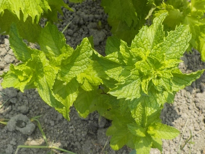

ミントが並んで育ってると見てて気持ちいいです。
更新日 : 2026/07/19

畑の隅っこに生えてると草刈りで切っちゃうので、紫蘇とセットでキレイに1列ミントを植えました。
キレイなグリーンが並んでるのはいいですね。しかも水やりしなくても元気に育ってる。
畑の中央付近の1列なので、多分広い範囲で香りもあるんじゃないかな？
更新日 : 2026/07/19

畑の隅っこに生えてると草刈りで切っちゃうので、紫蘇とセットでキレイに1列ミントを植えました。
キレイなグリーンが並んでるのはいいですね。しかも水やりしなくても元気に育ってる。
畑の中央付近の1列なので、多分広い範囲で香りもあるんじゃないかな？
ミントの香りで益虫がいなくなるのは致命的かも。